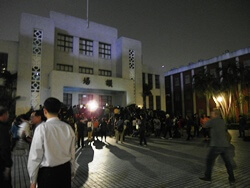

陪你走下去
六年過去，當人們已經逐漸淡忘當晚的血腥與暴力，
仍有一群人，尚未擺脫國家暴力事件的餘波，在法庭裡穿梭......
六年過去，當人們已經逐漸淡忘當晚的血腥與暴力，
仍有一群人，尚未擺脫國家暴力事件的餘波，在法庭裡穿梭......
2014-3-19 07:00pm

昨天看到佔領立法院的新聞後，就一直關注立院場內的直播，擔心議場裡的人會被驅離，和朋友們一起到立法院靜坐。
現場已經有不少人眾集，下班後的晚上我都會來到這裡...。
2014-3-23 07:00pm
反黑箱服貿運動已經持續了5天，政府終於召開記者會，卻只是重申服貿重要性，對於運動訴求卻不正面回應，我感到憤怒與失望。
許多人已經在行政院集結，我跟著人群來到行政院抗議，希望可以獲得政府的重視與正面回應...
2014-3-23 08:30pm
「退回服貿、捍衛民主！」
「退回服貿、捍衛民主！」
「退回服貿、捍衛民主！」
行政院的車道上已經有許多靜坐的民眾，我也席地而坐，和大家一起呼口號。
警察似乎越來越多了，大家開始不安起來...
2014-3-27
反黑箱服貿義務律師團召開「國家暴力不容遮掩，我控訴」記者會，呼籲國家暴力的被害人站出來。
在新聞、FB上看到司改會在找當天被打的人...。
反黑箱服貿義務律師
感謝陪伴我們前行的每一個你／妳
324周倪安自訴黃昇勇案
自訴代理人- 尤伯祥
- 郭皓仁
- 王 晨
- 申 哲
- 任孝祥
- 李明洳
- 李宣毅
- 李昭慶
- 李惠貞
- 李錫永
- 林建宏
- 林啟瑩
- 邱啟鴻
- 洪偉勝
- 張靜如
- 梁水源
- 許名志
- 郭德田
- 喬政翔
- 彭彥儒
- 劉繼蔚
- 蕭予馨
- 謝孟釗
324自訴馬英九、江宜樺、
方仰寧、王卓鈞案
- 尤伯祥
- 王 晨
- 申 哲
- 李明洳
- 李昭慶
- 李惠貞
- 李錫永
- 林建宏
- 邱啟鴻
- 洪偉勝
- 倪映驊
- 唐玉盈
- 袁瑋謙
- 張靜如
- 許名志
- 郭皓仁
- 郭德田
- 陳為元
- 陳鵬光
- 喬政翔
- 彭彥儒
- 黃新為
- 葉恕宏
- 劉冠廷
- 劉繼蔚
- 蔣昕佑
- 蕭予馨
- 謝孟釗
324國賠案
- 尤伯祥
- 王友正
- 申 哲
- 吳威廷
- 吳耀庭
- 李明洳
- 李惠貞
- 李錫永
- 林建宏
- 邱啟鴻
- 洪偉勝
- 洪菁黛
- 倪映驊
- 唐玉盈
- 唐德華
- 袁瑋謙
- 張晁綱
- 許名志
- 許惠峰
- 郭皓仁
- 郭德田
- 陳為元
- 陳鵬光
- 喬政翔
- 黃慧敏
- 葉恕宏
- 劉冠廷
- 劉繼蔚
- 蔣昕佑
324自訴指揮官楊鴻正、薛文容案
- 尤伯祥
- 郭皓仁
- 陳鵬光
- 唐玉盈
324自訴不知名員警案
- 尤伯祥
- 吳佶諭
- 呂文正
- 李昭慶
- 李盈佳
- 李荃和
- 李惠貞
- 林士雄
- 林建宏
- 林家如
- 洪旻郁
- 唐玉盈
- 孫 斌
- 涂莉雲
- 張信陽
- 張寧洲
- 許惠峰
- 許碧真
- 郭德田
- 陳一銘
- 陳孟秀
- 陳雨凡
- 陳奕廷
- 陳昱龍
- 陳憲政
- 黃于珊
- 黃國城
- 黃博彥
- 黃慧敏
- 廖蕙芳
- 劉冠廷
- 劉琦富
- 駱憶慈
- 謝孟釗
- 魏潮宗
- 羅婉婷
- 嚴心吟
- 顧立雄
323辯護案
- 丁穩勝
- 尤伯祥
- 王敘名
- 王龍寬
- 白友桂
- 任君逸
- 江榮祥
- 何朝棟
- 余瑞陞
- 吳文君
- 吳世宗
- 吳怡德
- 吳姿徵
- 吳宣樺
- 吳啟玄
- 吳啟豪
- 呂文正
- 李艾倫
- 李嬡婷
- 沈巧元
- 周君達
- 周漢威
- 林子翔
- 林育丞
- 林俊宏
- 林建宏
- 林家如
- 林殷廷
- 林啟瑩
- 邱于柔
- 邱叙綸
- 邱瑛琦
- 侯宜秀
- 施泓成
- 柯俊吉
- 洪大植
- 洪國勛
- 洪嘉呈
- 翁乙仙
- 高涌誠
- 高樗寧
- 張人志
- 張克豪
- 張寧洲
- 張靜如
- 張譽尹
- 莊文玉
- 許惠峰
- 連元龍
- 郭德田
- 郭憲彰
- 陳克譽
- 陳宏奇
- 陳怡君
- 陳昱龍
- 陳為元
- 陳鼎駿
- 陳誌泓
- 陳緯諴
- 陳耀南
- 曾威凱
- 黃昱中
- 黃英哲
- 黃淑芳
- 黃逸仁
- 黃意文
- 葉恕宏
- 董惠平
- 廖芳萱
- 褚瑩姍
- 趙書郁
- 趙珮怡
- 趙偉程
- 劉冠廷
- 劉庭伃
- 蔡秀芳
- 蔡明珊
- 蔡欣渝
- 蔡雅瀅
- 蔣昕佑
- 鄧思文
- 鄭富方
- 鄭歆儒
- 蕭予馨
- 賴秉詳
- 賴瑩真
- 戴維余
- 薛欽峰
- 謝佳穎
- 謝孟釗
- 謝富凱
- 鍾慶禹
- 簡旭成
- 簡凱倫
- 魏潮宗
- 羅婉婷
- 羅興章
- 嚴心吟
- 蘇孝倫